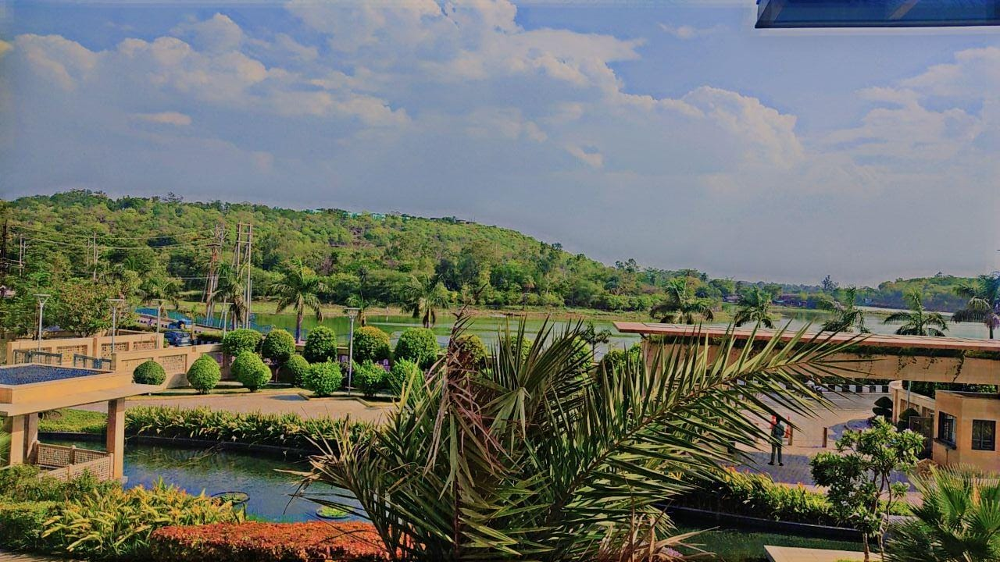
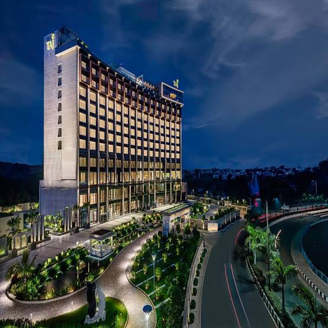
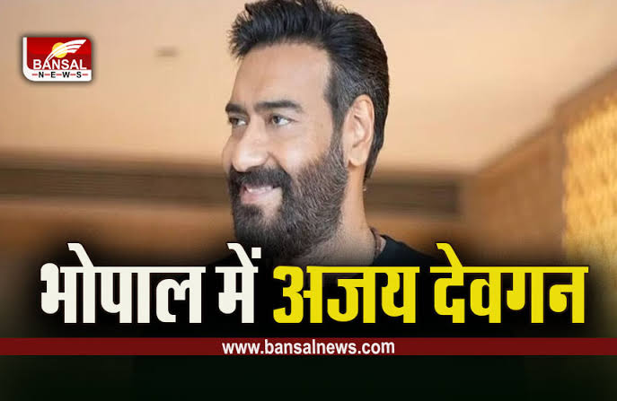
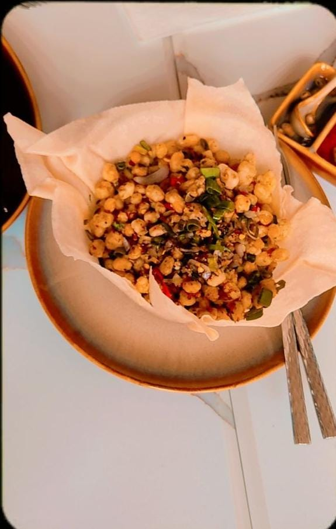
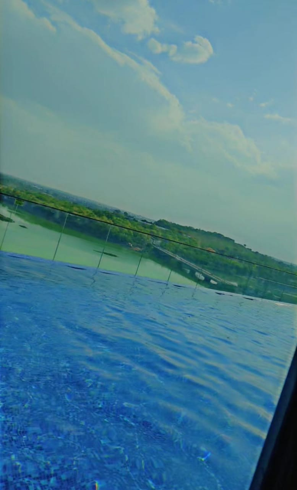

Welcome to Pankaj's Travel Tales!
I'm Pankaj, and I'm thrilled to have you here. Let me take you on a journey through the mesmerizing world of travel and exploration. But first, let me tell you a little bit about myself and the inspiration behind this blog.
About Me

Hello, I'm Pankaj! As an avid traveler and explorer, I've always been captivated by the beauty and diversity of our world. I find solace in exploring new destinations, tasting exotic cuisines, and immersing myself in different cultures. Travel, for me, is not just a passion; it's a way of life.
My Recent Adventure: Taj Hotel, Bhopal City
Recently, I had the privilege of visiting the exquisite Taj Hotel in the heart of Bhopal City. The experience left me in awe, and I couldn't wait to share it with you.
A Lakefront Oasis
One of the standout features of Taj Hotel, Bhopal, is the breathtaking view of the serene lake just outside the hotel. It's a view that's etched in my memory—tranquil waters, lush greenery, and the occasional boat gliding across the lake. It's a sight that truly complements the luxury of the hotel.
Convenience at Your Fingertips
During my stay, I was impressed by the convenience of getting around. Old and Uber services are readily available in the area, making it easy to explore Bhopal City and its surroundings. Whether you're heading to a local market or a historical site, transportation is a breeze.
A Brush with Stardom
Taj Hotel, Bhopal, is not just a haven for travelers like me; it's also a preferred choice for Bollywood superstars. During my stay, I was delighted to hear that big names like Ajay Devgan have chosen this luxurious retreat. It's a testament to the hotel's excellence and charm.
Impeccable Service and Culinary Delights
What truly sets Taj Hotel apart is its exceptional staff and the delightful culinary experiences it offers. The hospitality I received was nothing short of extraordinary. The team went above and beyond to ensure my stay was comfortable and memorable. From room service that catered to my every need to the exquisite dining options, every moment was a culinary delight.
Luxurious Amenities
My stay at Taj Hotel was made even more enjoyable with access to luxurious amenities. The swimming pool was a refreshing oasis, and the hotel's impeccable decoration added an element of charm to the entire experience.